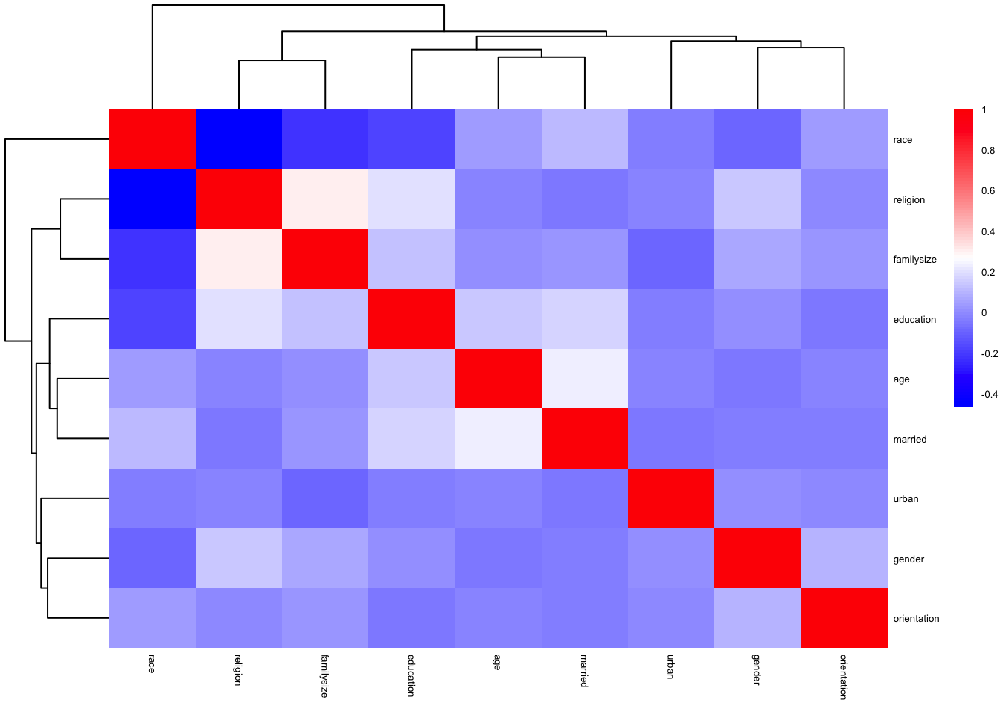
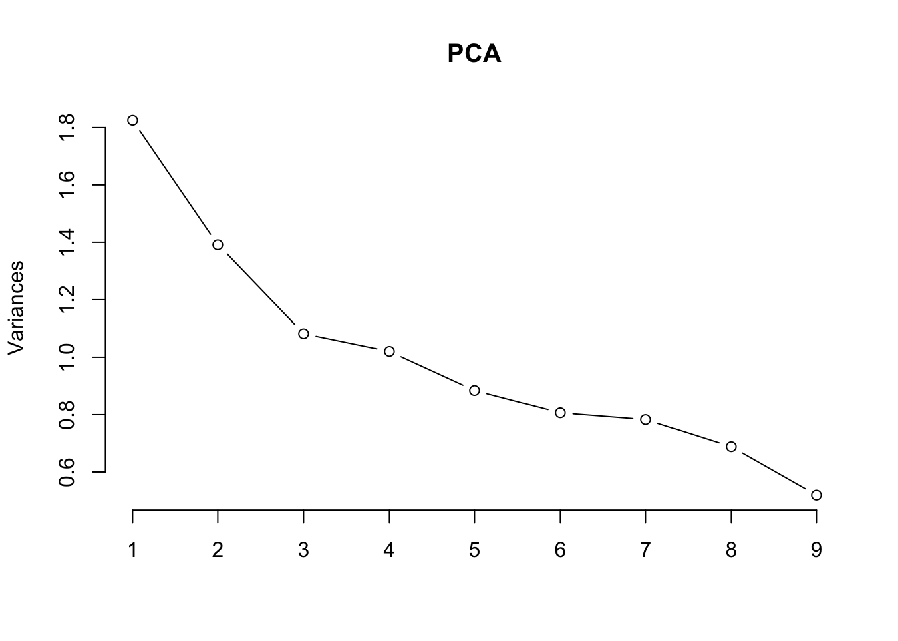

Statistical Analysis
# Select the columns you need and create a data frame
dass_heat1 <- dass %>%
dplyr::select(-matches('Q\\d+A')) %>%
dplyr::select(-country)
# Calculate the correlation matrix
r <- cor(dass_heat1,
method = "pearson",
use = "pairwise.complete.obs"
)
pheatmap(r,
show_colnames = TRUE,
show_rownames=TRUE,
fontsize=5,
color = colorRampPalette(c('#0000ff','#ffffff','#ff0000'))(100),
annotation_legend=TRUE,
border_color=NA,
scale="none",
cluster_rows = T,
cluster_cols = T
)
PCA = prcomp(dass_heat1, center = T, scale. = T)
PCA## Standard deviations (1, .., p=12):
## [1] 1.4646390 1.2729724 1.0537771 1.0126100 0.9984834 0.9611533 0.9412732
## [8] 0.8984910 0.8505141 0.7993756 0.7773969 0.7195562
##
## Rotation (n x k) = (12 x 12):
## PC1 PC2 PC3 PC4 PC5
## education 0.28335643 -0.45585794 0.08811193 0.130478342 -0.06881584
## urban -0.01876960 0.13055760 0.34492454 0.755907392 -0.28207815
## gender 0.15589846 0.12652118 -0.52157390 0.392167243 0.05109791
## engnat 0.46952529 0.05861071 0.20786095 0.011204670 -0.02955820
## age -0.01736900 -0.43855112 -0.06755471 0.111450441 -0.05045826
## hand -0.04725137 0.03385131 -0.08805204 -0.272175219 -0.94354215
## religion 0.52331859 0.03870894 -0.06266936 -0.004311622 -0.04109806
## orientation -0.01988840 0.09968474 -0.65151236 0.260605150 -0.10300765
## race -0.51663610 -0.09660588 -0.12831543 -0.029794962 0.04699835
## voted -0.01609117 0.51814912 -0.03212262 -0.100273917 0.04563281
## married -0.07956642 -0.51848359 -0.14630074 0.052888976 -0.01274049
## familysize 0.35256721 -0.06450240 -0.28000825 -0.299139931 0.05138714
## PC6 PC7 PC8 PC9 PC10
## education 0.28984258 -0.071719575 -0.05453739 0.03193532 -0.739645846
## urban -0.15425224 0.132854806 0.39614207 -0.10892124 0.014134814
## gender -0.16127179 -0.653913808 -0.18640043 -0.15780357 0.026400218
## engnat 0.13589978 0.115134738 -0.26842230 0.07549226 0.414635238
## age -0.53248824 0.370745489 -0.47590132 -0.36645004 0.035757946
## hand -0.02474624 -0.140219569 -0.05684401 -0.01189078 0.005715735
## religion -0.13037870 0.008017479 0.03812237 0.21389479 -0.024242883
## orientation 0.37467635 0.563204440 -0.03230468 0.16168218 0.010896138
## race 0.03908307 -0.049151249 0.11384486 -0.13864952 -0.076937686
## voted -0.51908718 0.181625962 -0.09981646 0.31841932 -0.471881267
## married -0.30754434 -0.090133355 0.26701155 0.66806180 0.222054674
## familysize -0.20154552 0.135799496 0.63786529 -0.42810629 -0.013693744
## PC11 PC12
## education 0.201282342 0.04051624
## urban 0.036670139 -0.02973865
## gender 0.117577656 0.05884010
## engnat 0.665398301 -0.08805529
## age -0.063785876 -0.02700822
## hand 0.026306827 0.01207631
## religion -0.415244552 -0.69406142
## orientation -0.006804577 0.04173822
## race 0.434838621 -0.68779452
## voted 0.279529229 0.05908712
## married 0.133177606 0.11457160
## familysize 0.198415719 0.11063593summary(PCA)## Importance of components:
## PC1 PC2 PC3 PC4 PC5 PC6 PC7
## Standard deviation 1.4646 1.2730 1.05378 1.01261 0.99848 0.96115 0.94127
## Proportion of Variance 0.1788 0.1350 0.09254 0.08545 0.08308 0.07698 0.07383
## Cumulative Proportion 0.1788 0.3138 0.40634 0.49179 0.57487 0.65185 0.72569
## PC8 PC9 PC10 PC11 PC12
## Standard deviation 0.89849 0.85051 0.79938 0.77740 0.71956
## Proportion of Variance 0.06727 0.06028 0.05325 0.05036 0.04315
## Cumulative Proportion 0.79296 0.85324 0.90649 0.95685 1.00000screeplot(PCA, type = 'line')
library(factoextra)## Welcome! Want to learn more? See two factoextra-related books at https://goo.gl/ve3WBafviz_pca_var(PCA)
dass_heat2 <- dass %>%
mutate(
depression = Q3A + Q5A + Q10A + Q13A + Q16A + Q17A + Q21A + Q24A + Q26A + Q31A + Q34A + Q37A + Q38A + Q42A - 14,
anxiety = Q2A + Q4A + Q7A + Q9A + Q15A + Q19A + Q20A + Q23A + Q25A + Q28A + Q30A + Q36A + Q40A + Q41A - 14,
stress = Q1A + Q6A + Q8A + Q11A + Q12A + Q14A + Q18A + Q22A + Q27A + Q29A + Q32A + Q33A + Q35A + Q39A - 14
) %>%
mutate(depression = case_when(
depression >= 0 & depression <= 9 ~ 0,
depression >= 10 & depression <= 13 ~ 1,
depression >= 14 & depression <= 20 ~ 2,
depression >= 21 & depression <= 27 ~ 3,
depression >= 28 ~ 4
)) %>%
mutate(anxiety = case_when(
anxiety >= 0 & anxiety <= 7 ~ 0,
anxiety >= 8 & anxiety <= 9 ~ 1,
anxiety >= 10 & anxiety <= 14 ~ 2,
anxiety >= 15 & anxiety <= 19 ~ 3,
anxiety >= 20 ~ 4
)) %>%
mutate(stress = case_when(
stress >= 0 & stress <= 14 ~ 0,
stress >= 15 & stress <= 18 ~ 1,
stress >= 19 & stress <= 25 ~ 2,
stress >= 26 & stress <= 33 ~ 3,
stress >= 34 ~ 4
)) %>%
dplyr::select(depression,anxiety,stress)
r1 <- cor(dass_heat2,
method = "pearson",
use = "pairwise.complete.obs"
)
pheatmap(r1,
show_colnames = TRUE,
show_rownames=TRUE,
fontsize=5,
color = colorRampPalette(c('#ffffff','#ff0000'))(100),
annotation_legend=TRUE,
border_color=NA,
scale="none",
cluster_rows = F,
cluster_cols = F,
breaks = seq(0, 1, length.out = 90)
)